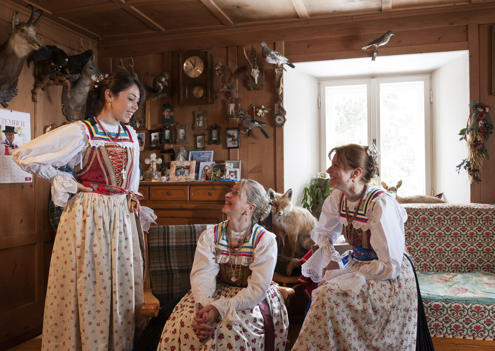
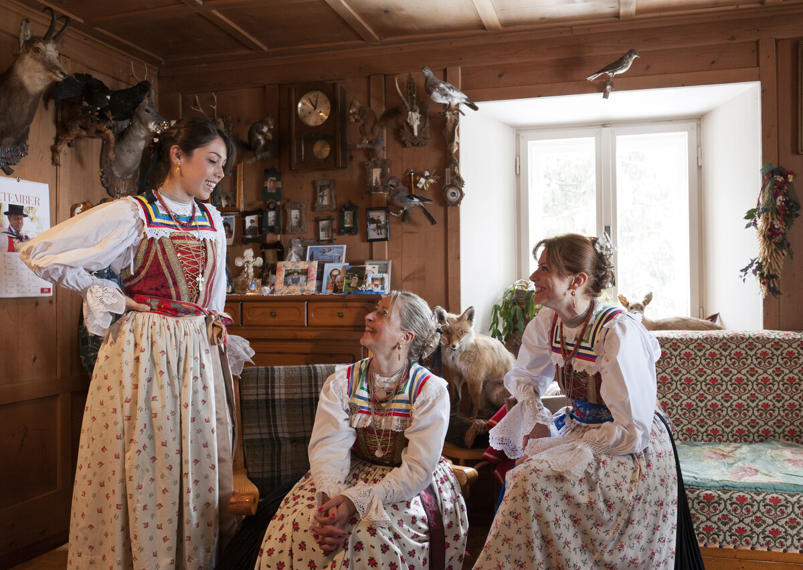

Tradizioni e Lingue
Una regione bilingue dove l’italiano e il tedesco convivono da secoli. Le tradizioni locali si riflettono in feste, costumi e architetture.
Una regione bilingue dove l’italiano e il tedesco convivono da secoli. Le tradizioni locali si riflettono in feste, costumi e architetture.
